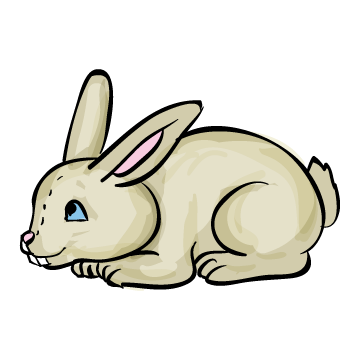

Az e-ső
A  a pi-a-con volt. Sa-lá-tát vett le-ves-nek.
– Fi-nom a sa-lá-ta. -nak va-ló!
– E-sőt lá-tok! – ki-ál-tott a . Nem volt ná-la . Volt ná-la te-le-fon. Te-le-fo-nált -nek. e-lé si-e-tett. Vitt -t is. Ket-ten men-tek el. A fi-nom le-vest is ket-ten et-ték.
– Fi-nom a sa-lá-ta. -nak va-ló!
– E-sőt lá-tok! – ki-ál-tott a . Nem volt ná-la . Volt ná-la te-le-fon. Te-le-fo-nált -nek. e-lé si-e-tett. Vitt -t is. Ket-ten men-tek el. A fi-nom le-vest is ket-ten et-ték.